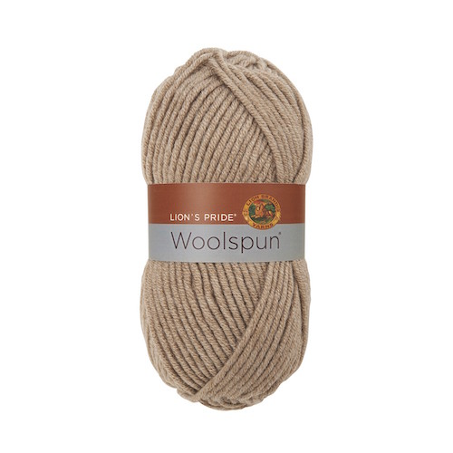

Woolspun Yarn



Price: $5.99
Reviews
Description
With an exquisite range of 35 neutrals, vivids, prints and mixes, Lion's Pride® Woolspun® will become your go-to yarn. It offers the triple crown of yarn benefits: it's machine washable and dryable, has the warmth and comfort of wool, and works up quickly. But, you'll discover the most unique quality of this yarn when you knit or crochet. The 12-ply construction means that garments drape beautifully and afghans and warm weather accessories have a cushiony soft bounce.
Product Details
| Fiber | Acrylic, wool |
| Weight(g) | 100g |
| Length | 127 yards |
| Yarn Weight | 5 (Bulky) |
| Care | Lay flat to dry, machine wash |
Reviews
Great product!
Love the colours
I find this blend to be extremely flammable